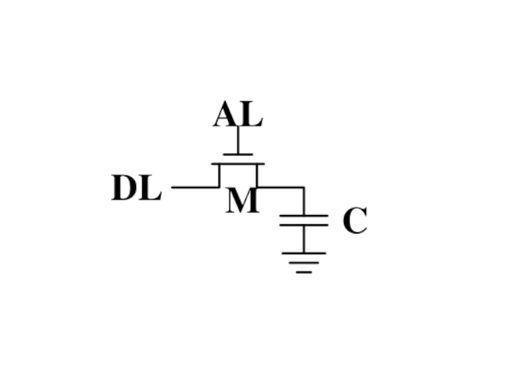

What this workshop is
- An intro into Performance thinking
- An attempt at understanding the machine we program on
- Some lesser know tricks
- A workshop. You gonna have to work for it.
What this workshop is not
- An exhausting list of tricks
- A lecture on algorithm and data structures - pick a book.
- Something you just listen and it clicks
- Application specific performance tips (Networking, SQL, ...)
You need to experiment yourself
We will write our own little databases in this workshop.
- You can group up or do it on our own if you must.
- You can also use your favourite programming language.
- You can always ask me outside the workshop when writing it.
TODO: Move the explanation of LSM dbs to intro and re-order io and cpu?
What is performance optimization?
TODO: Wikipedia.
Optimizing different metrics that
When to apply it?
- Probably more often than you do now.
- Whenever your performance requirements are not fulfilled.
Wait, there are requirements?
How to figure out performance criteria?
Well, that's your job mostly. Your PM won't tell you most of the time. But they will help you to get the requirements.
Ask those questions:
- On what kind of system the software will run on?
- How many users will there be in parallel?
- What kind of latency is the user willing to accept? (games, websites, ATMs)
- How much scaling is expected in the next time?
- Will my technology choice be a bottleneck? (Electron)
- Do edge cases need to perform well?
- Are the optimizations worth the risk/effort?
- ...
Do some basic calculations based on these and add X to your goals.
Do not ask: How fast could this be? (that's a fine question for personal learning though, but not when you get paid for delivering value to a company ;-))
After this workshop you should be able to onvert the answers to those questions to measurable numbers.
Edgecases are a good point: Sometimes performance is only bad in certain cases. Ask your PM if those are important for your business. If it's a open source library, probably fix those edge cases too.
When not to apply it?
about, the speed of noncritical parts of their programs, and these attempts at
efficiency actually have a strong negative impact when debugging and
maintenance are considered. We should forget about small efficiencies, say
about 97% of the time: premature optimization is the root of all evil. Yet we
should not pass up our opportunities in that critical 3%."
-- Donald Knuth
If you don't have a problem you really should not do anything. It is difficult to define what a "problem" is. Electron apparently defined that it's not a problem if low-memory devices can't use their framework.
How do I know if it's premature?

Remember: It does not matter you fast you compute a wrong result.
The main point is: Take your time to do things the right away. Don't drop the pen when it worked for the first time and didn't feel slow, really take some to measure.
However, don't just blindly optimize things before you measured or optimize the small things after measuring.
Optimizations come at a price. It's usually more and harder code to maintain (and if not, why didn't you do it in the first place?) or they have some other disadavntages (an index in a database for example slows drown writes and needs space!). Is it worth the risk?
How do I measure?
Via automated benchmarks.
The how will be shown
How do I know how to optimize?
No short answer and no shortcuts to this. It will be a long journey and this is workshop will be only a step on the journey.
Very many different languages, OS (Python, Go) and many different applications (SQL - 90%: just add an index) that cannot all be covered.
But there are some common basics and more importantly a commone thinking behind all of it. And that is: You have to understand what your program is doing to optimize it.
In a nutshell: Go from big to small
Algorithm for optimizing a correct program:
- Do the obvious things right away. ("obvious" depends a lot on experience)
- Check if your requirements are met. If you don't have concrete performance requirements, make some.
- Benchmark to find the biggest bottlenecks regarding performance (we are incredible bad at guessing! Never skip this step)
- Optimize biggest offender found and repeat from step 1.
Never mix up this order.
What is this program doing?
import sys print(sys.stdin.readline().strip())
Interpreted -> compiled to byte code. sys.stdin.readline are two dict lookups. memory allocations file I/O from stdin to stdout calling a c function (strip) unicode conversion!
Inside Python
All functions eventuall call functions implemented in C:
static PyObject * strip(PyObject *self, PyObject *args) { char *s = NULL; if (!PyArg_ParseTuple(args, "s", &s)) { return NULL; } return PyUnicode_FromString(s); }
And that happens for every function call in Python. Very often. All those objects are allocated on the heap. Python is easy, but the price you pay for it is high. This might give you a first feeling on how much stuff happens in a simple program.
Printing to stdout and drawing something on the screen is insanely complex too and beyond this workshop.
A word on interpreted languages
TODO: needed?
- Many things in this workshop do not apply to you 1:1.
- If you follow this workshop, a compiled language helps.
- TODO
Maybe some day you have to extend your language with a C module?
Theory: Complexity
- Data structures and algorithms can be divided in performance classes.
- General types are space and time complexity.
- Often also divided in worst case, best case, average case and specific operations.
- Complexity classes are given in Big-O notation.
Theory: Big-O Notation

www.bigocheatsheet.com
O(1) -> constant O(n) -> linear O(log n) -> logarithmic O(n * log n) -> sorting O(n ** x) -> polynomial O(x ** n) -> exponential O(n!) -> fucktorial (oops, typo)
Data structures and algorithms:
-> Some have better space / time complexity. -> Most have tradeoffs, only few are universally useful like arrays / hash tables -> Some are probalibisitic: i.e. they save you work or space at the expense of accuracy (bloom filters) -> Difference between O(log n) and O(1) is not important most of the time. (database developers might disagree here though)
Complexity examples
- Time complexity of bubble sort?
- Time complexity of binary search (worst + best)?
- Space complexity of merge sort vs quick sort?
- Removing an element from an array vs from a linked list?
- Best case / Worst case time complexity of get and set of a hash table?
- Space complexity of a hash map?
n**2 log2 n n vs 1 n vs 1 1 and 1 (but much more expensive than an array index) n
Makes you wonder why you don't use hash maps all the time? Indeed they are a wonderful invention, but:
- get is still much more expensive than an array index.
- collisions can happen, making things inefficient.
- range queries and sorting are impossible.
- self balancing trees have O(log n) for get/set but are stable.
Data structures in this workshop
This was it all. Go pick a book or course.
Data structures and algorithms is something you gonna have to learn yourself. Would totally go over the scope of this workshop and does not work as frontal lecture.
Do not ignore primitive algorithms like bubble sort. Remember: Fancy algorithms are slow when n is small, and n is usually small.
Benchmarking
Tests that measure performance requirements.
- Heavily tied to hardware.
- Requires
What are possible performance metrics?
Collect possible performance metrics (unit in parans):
- Execution time (time, cpu cycles)
- Latency (time)
- Throughput (IO, bytes/sec)
- Memory (allocations, peak, total bytes)
Humans are bad at magnitudes
https://colin-scott.github.io/personal_website/research/interactive_latency.html
In general:
- CPU < Memory < Files < Network.
Optimize in that order.
Profiling
Profiling is like benchmarking, but just once.
Profiling is usually used for finding a bottleneck, but you benchmark a program as part of it.
So most of the time the terms can be used interchangeably.
Benchmarking and Statistics
$ hyperfine
- Run several times.
- If the variance is not big, take the maximum.
- If the variance is rather large, use min...max.
Benchmarking and CI/CD
https://github.com/dandavison/chronologer
In an ideal world, performance requirements are tested just like normal functional requirements.
Challenges:
- Different machines that benchmarks run on.
- Only comparison between releases makes sense.
Makes sense only for big projects. Many projects have their own set of scripts to do this. I'm not aware of a standard solution.
Workshop Project
“What I cannot create, I do not understand”.
-- Richard Feynman
Words don't cut it. To understand something you have to lay your hands on something and start exploring. Workshop is about tacit knowledge, you have to connect the little dots on my slides by working on this small slide project. I can only show you things, not understand and learn it for you.
tacit = unausgeprochen
KV Store: Memory only
type KV map[string][]byte func (kv *KV) sync() { var b bytes.Buffer{} for k, v := range kv { b.WriteString(fmt.Sprintf("%s=%s\n", k, v)) } return ioutil.WriteFile("/blah", 0644, b.Bytes()) }
You could use a bigh in-memory hash table and sync that to disk sometimes.
When do you call sync()? After every write? Inefficient. Less often? Then you will suffer data loss on power loss or crash.
Sounds impractical, but surprise: Redis actually works this way. They do not use a hash map internally though, but a tree structure as index. Oh, and they perform most work in a single thread. Still fast.
KV Store: Append only
set() { printf "%s=%s\n" "$1" "$2" >> ./db } get() { grep "^$1=" ./db | tail -1 | cut -d= -f2- }
Simple append only write, get reads only the last value. Every update of an existing key writes it again.
Terribly slow because get needs to scan the whole db, but very easy to implement and set is pretty fast. If you hardly ever call get then this might be a viable solution.
KV Store: Indexed
type KV map[string]int64 func (kv *KV) Get(key string) []byte { // 1. Get & seek to offset // 2. Read value from db file. } func (kv *KV) Set(key string, val []byte) { // 1. Check size of db file. // 2. Append value to file with offset equal to db size // 3. Update kv index with new offset. }
This is actually already quite nice!
This approach is called "log structured", because values are handled like a stream of logs, just timestamped (or offset stamped) data.
We can handle any number of values as long as we do not run out of memory. If we throw in a little caching, we could probably get decent performance. This would also be a decent usage for something called mmap which we will look into later in this series.
When loading the db file, we can reconstruct the index map easily.
Problems:
- There will be many duplicates if we update the same keys over and over.
- The database file will grow without bound. Might turn out problematic.
- There may only be one writer at a point (race condition between size of db and actual write).
KV Store: Segments
Solution:
- If the db file gets too big (> 32M), start a new one.
- Old one gets compacted in background (i.e. duplicates get removed)
- Index structure remembers what file we need to read.
TODO: Find good diagram.
The compaction step can be easily done in the background.
Open issues:
- We still need to have all keys in memory.
- Range queries are kinda impossible.
- We can't delete stuff.
KV Store: Deletion

When we want to delete something, we just write a special value that denotes that this key was deleted. If a tombstone is the last value then the key is gone. Compaction can use it to clean up old traces of that value.
At this point we already build a key value store that is used out there: Bitcask.
KV Store: Range queries
TODO: good diagram
Change approach quite a bit:
- Keep a batch of key-value pairs in memory, but sorted by key.
- If batch gets too big, then swap to disk.
- Keep every 100th key in the offset index.
- If key not in index, go to file and scan the range.
This technique is called a Log-Structured-Merge tree (LSM).
"tree" because usually a tree is used instead of a hash table for easy handling, but this is not strictly necessary and the main point of the concept.
Since the index can be "sparse" (not all keys need to be stored), we have very fine grained control over memory usage. Worst thing is a bit of extra scanning in the file.
Open problems:
- Get on non-existing keys.
- Crash safety
KV Store: WAL
What if a crash occurs before things get written to disk?
We have to use a WAL like above! On a crash we can reconstruct everything from it. Postgres and many other databases make use of this technique too.
KV Store: Fin
I left quite some details out, but that's something you should be able to figure out.
CPU
Quiz:
- If two programs A and B execute the same number of instructions will they have roughly the same runtime?
- If two CPUs have the same frequency, can we make assumptions based on their speed?
Answer no.
Every instruction can take a different amount of cpu cycles. Every instruction can do a lot of different work (SIMD vs normal)
Compilers

Steps to compile something:
- Lexer/Tokenizer (break code in tokens)
- Parser (build AST from code)
- High Level IR (build generic language from it)
- Low level IR (optimize and make it suitable for machines)
- Convert to actual target machine code
Fun fact: Supercompilers

- Compilers do not usually produce the best code and rely heavily on pattern matching, heuristics and just being smart. They can miss room for optimizations although this is rather rare in practice. (except Go, which is just a developing compiler)
- Super compilers brute force compilation (sometimes with benchmarks) until they found the best performing piece of code.
- Not used in practice, since freaking slow but helpful for developing new compiler optimizations.
How is code executed?
- Assembly: 1:1 human readable interpretation of machine code.
- Machine code: machine readable instructions (each instruction has an id)
- Assembler: Program that converts assembly to machine code.
- This slides could be also a talk about "Why interpreted languages suck"
Most optimizations will not work with python. As a language it's really disconnected from the HW - every single statement will cause 100s or 1000s of assembly instructions. Also there are no almost no guarantees how big e.g. arrays or other data structures will be and how they are layout in memory. You have to rely on your interpreter (and I count Java's JIT as one!) to be fast on modern hardware - most are not and that's why there's so much C libraries in python, making the whole packaging system a bloody mess.
Other terminology
- Instruction Set Architecture (x86, arm)
- RISC / CISC
- Microarchitecture / Microcode (Pentium, Coffee Lake...)
- Instruction Set Extensions / SIMD (MMX, AES, SSE...)
Example of a CISC instruction set: x86 Today, most complex operations get translated to RISC code though by the CPU. CISC turned out to be slower, surprisingly.
RISC: ARM. Usually cheaper to build and also faster.
Microarchitecture: Implementation of a certain ISA.
ISE are not directly available in Go, only if the compiler decides to.
How is machine code stored? ELF!
ELF (Executable and linkable format)
$ readelf --sections /usr/bin/ls [...] [12] .text PROGBITS 0000000000008020 00008020 [...] [22] .data PROGBITS 0000000000059000 00058000 $ objdump --disassemble /usr/bin/ls
Beside storing the actual instructions ELF solves:
- Storing debugging info
- Making it possible to link with existing other libraries.
- Includes a text (code) and data section (pre-initialized variables)
- Different OS use different formats, but ELF is probably the most relevant for you and also the most widely known. Windows has a different one.
Go Assembler #1
1 package main 2 3 //go:noinline 4 func add(a, b int) int { 5 return a + b 6 } 7 8 func main() { 9 add(2, 3) 10 }
Go Assembler #2
Go assembly = assembler for a fantasy CPU
main.add STEXT nosplit size=4 args=0x10 locals=0x0 funcid=0x0 align=0x0 (test.go:4) TEXT main.add(SB), NOSPLIT|ABIInternal, $0-16 (test.go:4) FUNCDATA $0, gclocals·g2BeySu+wFnoycgXfElmcg==(SB) (test.go:4) FUNCDATA $1, gclocals·g2BeySu+wFnoycgXfElmcg==(SB) (test.go:4) FUNCDATA $5, main.add.arginfo1(SB) (test.go:4) FUNCDATA $6, main.add.argliveinfo(SB) (test.go:4) PCDATA $3, $1 (test.go:5) ADDQ BX, AX (test.go:5) RET (...)
Important: Explain registers!
Can we just say: To make things faster you have to reduce the number of instructions?
Sadly no. Modern CPUs are MUCH complexer than machines that sequentially execute instructions. They take all kind of shortcuts to execute things faster - most of the time. See also: Megaherz myth (-> higher clock = more cycles per time)
Effects that may play a role
- Not every instruction takes the same amount of cycles (MOV 1 cycle,
- Pipelining
- Superscalar Execution
- Branch prediction / Cache prefetching
- Out-of-order execution
- Cache misses (fetching from main memory mean
List of typical cycles per instructions ("latency"): https://www.agner.org/optimize/instruction_tables.pdf
Detour: Calling conventions
FuncAddGo: MOVQ 0x8(SP), AX ; get arg x MOVQ 0x10(SP), CX ; get arg y ADDQ CX, AX ; %ax <- x + y MOVQ AX, 0x20(SP) ; return x+y-z RET
FuncAddC: LEAL (%rdi,%rsi), %eax ADDL %edx, %eax RETQ
Go and C have different calling conventions. C passes params and return values over registers Go uses memory addresses (on the stack)
This makes it impossible to call a C function directly from Go. Some languages like Zig share the same calling convetions and make it therefore possible to directly call C code. For go we need a weird abstraction layer called cgo.
Inlining functions
Inlining functions can speed up things at the cost of increased ELF size.
Advantage: Parameters do not need to get copied, but CPU can re-use whatever is in the registers alreadys. Also return values do not need to be copied.
Only done for small functions and only in hot paths.
Pipelining
https://de.wikipedia.org/wiki/Pipeline_(Prozessor)
LOAD: Load the instruction from memory, increment instruction counter. DECODE: Data for the command is loaded. EXEC: Instruction is executed. WRITEBACK: Result is written back to a register.
- Every instruction needs to do this
- Modern CPUs can work on many instructions at the same time
- They can be also re-ordered by the CPU!
- This can lead to issues when an instruction depends on results of another instructions! (branches!)
- It can even happen that we do unncessary work! See SPECTRE and MELTDOWN security issues!
Branch prediction
... you can give hints to your CPU!
if(likely(a > 1)) { // ... } if(unlikely(err > 0)) { // ... }
No likely() in Go, compiler tries to insert those hints automayically. Not much of an important optimization nowadays though as CPUs get a lot better:
https://de.wikipedia.org/wiki/Sprungvorhersage
(but can be relevant for very hot paths on cheap ARM cpus)
Branch prediction in real life
for(int i = 0; i < N; i++) { if (unsorted[i] < X) { sum += unsorted[i]; } }
for(int i = 0; i < N; i++) { if (sorted[i] < X) { sum += sorted[i]; } }
Effect is unnotice-able if optimizations are enabled. Why? Compilers can make the inner branch a branchless statement.
Go 1.20: Profile Guided Optimization
Idea:
- Let program run in analysis mode.
- Capture data about what branches were hit how often.
- Use this data on the next compile to decide which branch is likely!

Also decides on where to inline functions.
https://tip.golang.org/doc/pgo
Old news for languages like C.
Branchless programming
int32_t max(int32_t a, int32_t b) { if(a > b) { return a; } return b; }
return (a > b) * a + (a <= b) * b;
return a - ((a - b) & ((a - b) >> 31)
Probably not relevant in most cases, as compiler are usually smart, but CAN be a life saver in really hot loops.
Loop unrolling
- A for loop is just a repeated branch condition.
- Compilers unroll simple loops.
- If they don't hand unrolling can be useful (very seldom!)
TODO: Example
Reduce number of instructions
memcpy example
TODO: Instrinsic
I want to MOV, MOV it
MOV <dst> <src>
MOV <reg> <reg> MOV <mem> <reg> MOV <reg> <mem>
-> Access to main memory is 125ns, L1 cache is ~1ns
Fun fact: MOV alone is Turing complete: https://github.com/xoreaxeaxeax/movfuscator
The von Neumann Bottleneck
von Neumann Architektur:
- Computer Architecture where there is common memory accessible by all cores
- Memory contains Data as well as code instructions
- All data/code goes over a common bus
- Pretty much all computer nowadays are build this way
Bottleneck: Memory acess is much slower than CPUs can process the data.
L1, L2, L3
Just add caches!

TODO: Add picture of cache architecture.
Cache lines
typicall 64 byte Read an written in one go!
Caches misses
Unsure if you have cache misses? Use the perf stat -p <PID> command!
https://access.redhat.com/documentation/en-us/red_hat_enterprise_linux/8/html/monitoring_and_managing_system_status_and_performance/getting-started-with-perf_monitoring-and-managing-system-status-and-performance https://access.redhat.com/documentation/en-us/red_hat_enterprise_linux/8/html/monitoring_and_managing_system_status_and_performance/overview-of-performance-monitoring-options_monitoring-and-managing-system-status-and-performance
counter example 1-3
Struct size matters
// How big is this struct? type XXX struct { A int64 B uint32 C byte D bool E string F []byte G map[string]int64 H interface{} I int }
Padding can happen
x := XXX{} // measured with Go 1.20! fmt.Println("A", unsafe.Sizeof(x.A)) // 8 fmt.Println("B", unsafe.Sizeof(x.B)) // 4 fmt.Println("C", unsafe.Sizeof(x.C)) // 1 fmt.Println("D", unsafe.Sizeof(x.D)) // 1 (<-- +2 padding) fmt.Println("E", unsafe.Sizeof(x.E)) // 16 fmt.Println("F", unsafe.Sizeof(x.F)) // 24 fmt.Println("G", unsafe.Sizeof(x.G)) // 8 fmt.Println("H", unsafe.Sizeof(x.H)) // 16 fmt.Println("I", unsafe.Sizeof(x.I)) // 8 fmt.Println("x", unsafe.Sizeof(x)) // 88 (not 86!)
If a struct is bigger than a cache line, then accessing .A and .I would cause the CPU to always require to get a new cache line!
Binary size matters
- More debug symbols, functions and instructions make the binary bigger.
- A process needs at least as much memory as the binary size (caveat: only the first one)
- The bigger the binary, the longer the startup size. Important for shortlived processes (scripts!)
- CPUs have caches for code instructions. If your program is so fat that that the caches get evicted, you might have created a performance issue. (ex: jumping between two functions in your binary, located across)
Binaries can be compressed with UPX, but that does make start up time faster - contrary to that.
Also, in the embedded world the binary size is way more important, but 30M binaries seem excessive even on servers. Go is doing a bad job here while Rust produces tiny outputs.
Detour: perf command
System wide profiling
perf stat -a <command> # Like `time` but much better. perf stat -a -p <PID> # Attach to existin process. perf mem # Detailed report about memory access / misses perf c2c # Can find false sharing (see next chapter)
Detour: pprof
Visualize where the program spends time:
- Call graph is annotated times.
- Alternatively available as flamegraph.
# pprof server under port 3000:
$ go tool pprof localhost:3000/debug/pprof/profileLook at images/dashboard_pprof.svg here.
Pprof is also available for Python, but not as well integrated: https://github.com/timpalpant/pypprof
Detour: Flame graphs
// Alternative for shortlived programs. // Paste this in main(): f, _ := os.Create("cpu.pprof") pprof.StartCPUProfile(f) defer pprof.StopCPUProfile() // ... do your work here ...
See images/brig_flamegraph.png See images/brig_flamegraph.html
Perfect to see what time is spend in in what symbol. Available for:
- CPU
- Memory Allocations (although I like pprof more here)
- Off-CPU (i.e. I/O)
Cache coherency
In multithreaded programs, a cache gets evicted
False sharing
Counter4 example.
Multiple threads use the same memory
Can be fixed by introducing padding!
- False sharing / True sharing (i.e. when to pad your data structures https://alic.dev/blog/false-sharing.html )
True sharing
This is when the idea of introducing caches between CPU and memory works out. Good news: Can be controlled by:
- Limiting struct sizes to 64 bytes
- Grouping often accessed data together. (arrays of data, not array of structs of data)
-> employee example
Data oriented programming
The science of designing programs in a CPU friendly way.
DOP is often mentioned as contrast to OOP, but both concepts can complement each other.
Object oriented program is designing the program in a way that is friendly to humans.
It does by encapsulating data and methods together. By coincidence, this is not exactly helpful to the machine your program runs on. Why?
- global state (i.e. impure functions) make branch/cache predictions way harder.
- hurts cache locality.
Matrix Traversal
- Why is column traversal so much slower?
Good picture source: https://medium.com/mirum-budapest/introduction-to-data-oriented-programming-85b51b99572d
Employees
- Why is the variant with two arrays faster?
- What happens if we make the name array longer/shorter?
Array-of-Structures vs Structures-of-Arrays
memcpy
- Why is the single-byte memcpy so much slower?
- What evil trick is the system memcpy doing?
- Can we do even faster?
-> Problem: von-Neumann-Bottleneck. -> CPU can work on data faster than typical RAM can deliver it. -> Workaround: Caches in the CPU, Prefetching. -> Actual solution: Data oriented design. -> Sequential access, tight packing of data, SIMD (and if you're crazy: DMA) -> Still best way to speed up copies: don't copy.
Object oriented design tends to fuck this up and many Games (at their core) do not use OOP. You can use both at the same time though!
Process scheduler
We're not alone on a system. Every process get assigned a share of time that it may execute.
- After execution: Store state in RAM.
- Before execution: Load state from RAM.


-> Expensive. Switching too often is expensive.
- scheduler types (O(n), O(1), CFS, BFS)
- scheduler is determined at compile time.
- there are some knobs to tune the scheduler, but not that interesting.
- Show process states with ps a.
Process load
- Load param counts the number of processes in running or waiting state.
- "0" describes an idle system.
- If the system has a higher load number than cores it is overloaded.
- load is averaged over 5, 10, 15 by default.
- use load5 for graphs, load15 for quick judgmenet.
Process niceness
Niceness is the "weight" for a certain process during scheduling:
- Ranges from -20 to +19.
- -20 gives the process more time to execute.
- 0 is the default.
- +19 gives the process way less to execute.
Can be set via nice (new commands), renice (running programs) Exact behaviour depends on scheduler (scheduling frequency vs time slice size)
Rough Rules to take away
- Only use so much memory as you really need.
- Writes modify the cache. Directly use your data or declare it later.
- Keep your structs small. (<64 byte)
- Avoid nesting of data, if possible.
- For small structures (<64 byte) prefer copying over pointers.
- Avoid jumpin around in your memory a lot.
- Avoid virtual methods and inheritance.
TODO: Revisit those rules.
Go even warns about too structures (if they are used as values):
gocritic hugeParam: cfg is heavy (240 bytes); consider passing it by pointer
TODO: sync.Pool TODO: pprof for memory.
Memory
RAM
- RAM = Random Access Memory
- Huge, sequential line of individual memory cells
- Usually can only be addressed in pages
- Memory controller that handles the actual interaction.
- Two major types: Static RAM (SRAM) vs Dynamic RAM (DRAM)
SDRAM = Synchronous DRAM DDR-SDRAM = Double Data Rate SDRAM
DRAM - one bit, please
Dynamic sounds good, doesn't it?
- Very simple and cheap to produce.
- High density (many cells per area)
- Needs to be refreshed constantly (64ns or so)
Fun fact: DRAM enables a hardware-based security attack: ROWHAMMER. Changing a row of DRAM cells can, if done very often, switch a nearby row. This can be used to change data like "userIsLoggedIn".
SRAM - one bit, please

- Very fast. 10x speed of DRAM
- No refresh required.
- Low power consumption
- Expensive, not so high density
Why use DRAM at all?
- Because it's cheap, and we need tons of it.
- Main memory is all DRAM.
- Caches (L1-L3) are SRAM.
- A lightbulb is maybe OSRAM (Sorry.)
So basically...
again, hardware is at fault and instead of fixing it with some Pfiffikus we software devs have to cope with slow main memory.
NUMA
Is the access to all memory offsets equally fast?
- Not if you have more than one CPU!
- Every CPU gets 1/nth of the memory.
- Every CPU can access the completely memory.
- Non-local access is costly.
NUMA - non uniform memory access
Linux is NUMA very well capable and that's why it's such a popular server operating system. Or one of the reasons at least.
How the heck does this stuff relate to me?
Not so much on a daily basis, to be fair. But:
- Memory allocations are expensive.
- Strategies to make less/smaller allocations help performance
- Requires sadly an understanding how the OS handles memory.
TODO: Maybe use graphics from here: https://medium.com/eureka-engineering/understanding-allocations-in-go-stack-heap-memory-9a2631b5035d
The stack & heap #1
//go:noinline func f() *int { v := 3 return &v } func main() { // Two for the stack: // a=0xc00009aef8 b=0xc00009aef0 a, b := 23, 42 // Two for the heap: // c=0xc0000b2000 d=0xc0000b2008 c, d := f(), f() }
The stack & heap #2
Stack is...
- ...cleaned up automatically on return
- ...bound to a function call
- ...preferred if possible.
- ...can be reasoned about during compile time
- ...good for small amounts of data.
Heap is...
- ...needs to be explicitly requested
- ...needs to be explititly cleaned up
- ...can be used until freed.
- ...should be used when required.
- ...usually required for a lot of data.
The stack & heap #3
Go is clever and hides this from you via escape analysis:
func f() { v := 3; return &v } func main() { fmt.Println(f()) }
$ go build -gcflags="-m" . ./main.go:3:2: moved to heap: v
The more you allocate on the heap, the more pressure you put on the memory bookkeeping and the garbage collector.
Performance tip: Avoid variables escaping to the heap:
- Avoid using pointers if unnecessary
- Prefer return by value if value is small (< 128 byte) (small copy is faster than GC)
- Don't overreact here though. Don't make your APIs ugly just because you know this little fact. Use this in hot loops. AFTER measurement.
Never heard of this stuff, why should I care?
Difference is important in C Well, you're lucky enough that your compiler does it for you Or you're unlucky enough to use python where all hope is forlorn
Detour: What is a StackOverflow?
Why using the stack only for small data if you can also use it for somewhat dynamic allocations?
Because stack size is limited (on linux about 8MB, but don't rely on that)
How can you hit this limit?
- By recursion - lots of nested stacks.
- By running over the extents of a buffer (in C)
See example: stackoverflow.
GC pressure, locality and memory management
Prefer this:
m := make(map[string]someStruct)
over:
m := make(map[string]*someStruct)
- Way less memory in total
- Data is packed together (good for caching!)
- Less work for the GC and the allocator to do
- Pointers give you more potential to fuck up.
noptr 577.7 ns/op 336 B/op 2 allocs/op ptr 761.4 ns/op 384 B/op 10 allocs/op (The 10 will increase with input! Longer runs will cause more GC for the ptr case)
Virtual memory

- The physical memory of a system is splitted up into 4k pages.
- Each process maintains a virtual memory mapping table, mapping from the virtual range of memory to physical memory.
- Address translation is handled efficiently by the MMU
Wait, those addresses I saw earlier... are those the addrs in RAM? Hopefully not, because otherwise you could somehow find out where the OpenSSH server lives in memory and steal it's keys. For security reasons it must look for each process like he's completely alone on the system. What you saw above are virtual memory addresses and they stay very similar on each run.
The concept how this achieved is called "virtual memory" and it's probably one of the more clever things we did in computer science.
Virtual memory implementation
- Each process has a list of page tables mapping virtual to physical memory ("page table")
- On process start this table is filled with a few default kilobytes of mapped pages (the first few pages are not mapped, so dereferencing a NULL pointer will always crash)
- When the program first accesses those addresses the CPU will generate a page fault, indicating that there is no such mapping. The OS receives this and will find a free physical page, map it and retry execution. If another page fault occurs the OS will kill the process with SIGSEGV.
Virtual memory advantages
- Pages can be mapped only once it is needed (CoW)
- Processes can share the same page for shared memory.
- Pages do not need to be mapped to physical memory: Disk, DMA or even network is possible!
- Processes are isolated from each other.
- Processes consume only as much physical ("residual") memory as really needed.
- Programs get easier to write because they can just assume that the memory is not fragmented.
- Pages can be swaped by the OS without the process even noticing (Swapping)
- The kernel can give away more memory than there is on the system (overcommiting)
- Pages with the same content can be deduplicated
Residual vs virtual memory usage
TODO: look a htop and free
Quick peak memory measurement
/usr/bin/time -v <command>
malloc()
`c char *one_kb_buf = malloc(1024 * sizeof(char)); /* use one_kb_buf somehow */ free(onone_kb_buf); `
- malloc itself is implemented in user space, not by the kernel.
- Think of it as some sort of memory pool management library (implemente by glibc)
- When malloc runs out of space it asks the kernel for more space by using either the sbrk call (for small allocations) or mmap (for big allocations). Allocations have as multiple of PAGE_SIZE (4KB)
- sbrk is a system call that moves the program break of a program upwards (or downwards) by a certain amount.
- The new space is then managed by malloc. Each allocation gets added a header by malloc at the start (~10 byte), so many small allocations are wasteful.
- Memory that is not directly used is kept in a freelist. Only once the freelist is empty, new memory is fetched from the operating system.
- On free a memory block is added back to the freelist.
- malloc is optimized for the usecase of allocating many (typically) small sized objects with minimal fragmentation. Since every program tends to have different needs it makes sense to do this in userspace.
- Go uses a similar implementation, but is more sophisticated. Main difference: it keeps pre-allocated arenas for differently sized objects. i.e. 4, 8, 16, 32, 64 and so on.
What the fuck happens on allocation?
In C you have to explicitly what Go does in the background for you:
Swapping
$ dd if=/dev/zero of=swapfile count=1024 bs=1M $ swapon ./swapfile
$ cat /proc/sys/vm/swappiness (value between 0-100) 0 = only swap if OOM would hit otherwise. 100 = swap everything not actively used.
Linux can use swap space as second-prio memory if main memory runs low. Swap is already used before memory goes low. Inactive processes and stale IO pages get put to swap so that memory management can make use of that space to provide less fragmented memory regions.
How aggressive this happens can be set using vm.swappiness. A value between
Rules:
- If you want to hibernate (i.e. powerless suspend) then you need as much swap as RAM.
- Otherwise about half of RAM is a good rule of thumb.
- Systems that rely on low latency (i.e. anything that goes in the direction of realtime) should not swap.
The OOM Killer
- Kicks in if sytem almost completely ran out of RAM.
- Selects a process based on a scoring system and kills it.
- Processes can be given a priority in advance.
- Last resort mechanism.
- Reports in dmesg.
- Sometimes comes too late and is not able to operate anymore.
Alternatives:
- earlyoom
- systemd-oomd
Userspace-Daemons that monitor memory usage and kill processes in a very configurable way. Well suited for server systems.
mmap()
- Can map files (among other things) to a processes' memory.
- File contents are loaded
Maybe one of the most mysterious system features we have on Linux.
Typical open/read/write/close APIs see files as streams. With mmap() we can handle files as arrays and the memory needed for this can be shared by several processes!
Great for implementing databases or implementing random access to a big file (ex: reading every tenth byte of a file)
mmap for databases
Short answer: Don't. Not enough control. Random order + writes hurt mmap.
Long answer: https://db.cs.cmu.edu/mmap-cidr2022
Good mmap use cases:
- Reading large files (+ telling the OS how to read)
- Sharing the file data with several processes in a very efficient way.
- Zero copy during reading.
- Ease-of-use. No buffers, no file handles.
madvise() and fadvise()
- You can give tips to the kernel.
- When you know that you need a certain memory page soon, then you can do madvise(addr, 4096, MADV_WILLNEED).
- With fadvise() you can do the same for files.
This is greatly notice-able with file I/O!
Caveat: Complex orders (like tree traversal) cannot be requested by userspace.
TODO: epoll / select and sorts. Maybe later in parallel programming? TODO: closing files TODO: Agenda
Latency and Throughput
Metaphor: a water pipe.
Latency = time until the first drop of water arrives Throughput = How many liters of water we can pipe through
Examples:
- SSDs: Low latency, high throughput.
- HDDs: Medium latency, high throughput.
- Network: Often high latency, any kind of throughput.
- USB Stick over carrier pigeon: High latency, high throughput.
Hardware: HDDs

- Rotational, stacked disks.
- Reading head needs to seek to the right position.
- Mechanical system, bad at low/high temperature or moving systems.
- Dying technology, but battled tested & still widely used.
Big advantage: You could debug issues with too many seeks by audio!
Also: did you ever try to shake your old laptop with a hdd while reading?
Hardware: SDDs

- Flash technology
- No expensive seek necessary.
- Limited number of write cycles.
- Becoming cheaper and better every year.
Write software for SSDs. There were some crazy tricks like FIEMAP to make applications re-order their reads in the order of how they are placed on disk. (Huge speedup on HDD, small speedup on SSD)
Hardware: Write amplification

Source: http://databasearchitects.blogspot.com/2021/06/what-every-programmer-should-know-about.html?m=1
SSDs are divided into blocks (seveal MB), which are divided into pages (often 4K). Pages cannot be erased, only blocks can be. Updates of a pages are written to new blocks. If space runs out, old blocks with many stale pages are erased and can be re-used. The number of physical writes is therefore higher than the number of logical writes. The more space is used, the higher the write amplication factor though.
What we can do about it: Buy bigger SSDs than you need. Also avoid rewriting pages if possible. Secret: SSD have some spare space to keep working they don't tell you about.
Also enable TRIM support if your OS did not yet, but nowadways always enabled. This makes it possible for the OS to tell the SSD additional blocks that are not needed anymore.
Virtual File System

Below device drivers: hardware controllers - beyond this talk. They can also re-order writes and are mostly concerned with durability, i.e. a SSD controller will try to distribute the blocks he used to make sure they have a similar amount of write cycles.
How do syscalls work?
Only method of userspace to talk to kernel. How to call is interrupt specific.
movl $4, %eax ; use the `write` system call movl $1, %ebx ; write to stdout movl "Hello World!\n", %ecx ; use string "Hello World" movl $12, %edx ; write 12 characters syscall ; make system call via special instruction ; The return code is in the eax register.
The syscall instruction performs a context switch.
This means the current state of the process (i.e. the state of all registers in the CPU) is saved away, so it can be restored later. Once done, the kernel sets the register to its needs, does whatever is required to serve the system call. When finished, the process state is restored and execution continues.
Context switches also happen when you're not calling any syscalls. Simply when the scheduler decide this process is done with execution.
Typical syscalls
- IO: read, write, close
- Files: stat, chmod, mkdir
- Memory: sbrk, mmap
- Processes: fork, kill, wait
- Network: listen, connect, epoll
- Mysterious: ioctl, chroot, mount
Luckily for us, glibc and Go provide us nice names and interfaces to make those system calls. They usually provide thin wrappers that also do some basic error checking. Watch out: fread is doing buffering in userspace!
Can anyone think of another syscall not in the list above? exit! chdir, mkdir, chmod, ...
Syscalls are expensive
$ dd if=/dev/urandom of=./big-file bs=1M count=1024 $ dd if=big-file of=/dev/null bs=1b 4,07281 s, 264 MB/s $ dd if=big-file of=/dev/null bs=32b 0,255229 s, 4,2 GB/s $ dd if=big-file of=/dev/null bs=1024b 0,136717 s, 7,9 GB/s $ dd if=big-file of=/dev/null bs=32M 0,206027 s, 5,2 GB/s
Good buffer sizes: 1K - 32k
Many syscalls vs a few big ones.
Try to reduce the number of syscalls, but too big buffers hurt too.
Making syscalls visible
$ strace ls /tmp
Insanely useful tool to debug hanging tools or tools that crash without a proper error message.
Usually the last syscall they do give a hint.
Terminology: inode?
The unique id of a file. Several paths can have the same Inode.
$ echo hello-world > file $ stat --format '%i' file 1883 $ ln file hardlink $ stat --format '%i' hardlink 1883
There's a theoretical maximum of inodes per filesystem. Most filesystems prefer bigger files, since every file lookup has to lookup the right one in a big set of inodes.
Page cache
- All I/O access is cached using the page cache (dir + inode)
- Free pages are used to store recently accessed file contents.
- Performance impact can be huge.
Clearing the cache
For I/O benchmarks always clear all caches:
sync; echo 3 | sudo tee /proc/sys/vm/drop_caches
Example: code/io_cache
Caveat: Writes are buffered!
Make sure all file data is written to the hardware:
sync
fsync(fd)
That's why we have the sync command before the drop_cache command.
Alternative to fsync()
# Move is atomic!
$ cp /src/bigfile /dst/bigfile.tmp
$ mv /dst/bigfile.tmp /dst/bigfileThis only works obviously if you're not constantly updating the file, i.e. for files that are written just once.
Typical read I/O
char buf[1024]; int fd = open("/some/path", O_CREAT|O_RDONLY|O_TRUNC); size_t bytes_read = 0; while((bytes_read = read(fd, buf, sizeof(buf))) > 0) { /* do something with buf[:bytes_read] */ } close(fd);
Typical write I/O
char buf[1024]; size_t bytes_in_buf = 0; int fd = open("/some/path", O_CREAT|O_WRONLY|O_TRUNC); do { /* fill buf somehow with data you'd like to write, * set bytes_in_buf accordingly. */ } while(write(fd, buf, bytes_in_buf) >= 0) fsync(fd); close(fd);
There is a bug here:
write() returns the number of written bytes. It might be less than bytes_in_buf and this is not counted as an error. The write call might have simply been interrupted and we expect that it is called another time with the remaining data.
Also: Does the application that the data is immediately for read()? Answer: nope. You have to use fsync()
Also please note: There is some error handling missing here.
Fixed write version
/* ... */ char *buf_ptr = buf; while(bytes_in_buf > 0) { size_t written = write(fd, buf_ptr, bytes_in_buf); bytes_in_buf -= written; buf_ptr += written; if(errno != 0) { return; } } /* ... */
Many write utils actually handle this for you. But io.Writer() behaves the same! Depending on the underlying file type and system this might be rare but is a real thing.
What about fread()?
A weird accident in history.
Usecases:
- You need to read byte by byte.
- You need to unread some bytes frequently.
- You need to read easily line by line.
Otherwise: Do not use.
Userspace buffered functions. No real advantage, but limiting and confusing API. Has some extra features like printf-style formatting.
In Go the normal read/write is using the syscall directly, bufio is roughly equivalent to f{read,write} etc. fsync() is a sycasll, not part of that.
Detour: Filesystems
Performance depends a little on filesystem:
- ext2/3/4: good, stable & fast choice.
- fat8/16/32: simple, but legacy, do not use.
- NTFS: slow and only for compatibility.
- XFS: good with big files.
- btrfs: feature-rich, can do CoW & snapshots.
- ZFS: highly scalable and very complex.
- sshfs: remote access over FUSE
Actual implementation of read/write/etc. for a single filesystem like FAT, ext4, btrfs. There are different ways to layout and maintain data on disk, depending on your use case.
Syscalls all work the same, but some filesystems have better performance regarding writes/reads/syncs or are more targeted at large files or many files.
Most differences are admin related (i.e. integrity, backups, snapshots etc.)
Detour: Fragmentation
The problem that file content is distributed over many blocks.
Windows sucks but this term stuck in our heads. ext4 does not require fragmentation.
Detour: FUSE

A note on seeking
- Rotational disks have only one reading head.
- They re-order read requests
- This can increase latency!
- SSDs use
I/O improving performance
- Avoid I/O.
- Use a sane buffer size.
- Use append only data for writing.
- Batch writes as they evict caches.
- Prefer few big files over many small files.
- Avoid directories with high amount of files (git)
- For modifying big files use mmap.
- Buy faster hardware.
I/O improving performance #2
- Use a different I/O scheduler (none).
- Use a different filesystem (tmpfs)
- Leverage the page cache and trust the OS
- Use zero-copy techniques: sendfile, splice
- Not crazy: Use DMA if possible (hardware dependent)
- Slightly crazy: fadvise() if you need prefetch
- Maybe crazy: use O_DIRECT
- Likely crazy: skip fsync()
- Definitely crazy: FIEMAP
I/O scheduler
Re-orders read and write requests for performance.
- none: Does no reordering.
- bfq: Complex, designed for desktops.
- mq-deadline, kyber: Simpler, good allround schedulers.
In the age of SSDs we can use dumber schedulers. In the age of HDDs schedulers were vital.
ionice
$ ionice -c 2 -n 0 <some-pid>
- Default level is 4. Lower is higher.
Well, you can probably guess what it does.
Reduce number of copies
- Do not copy buffers in your program too often
- You can use readv to splice existing buffers to one.
- Use hardlinks if possible
- Use CoW reflinks if possible.
- sendfile() to copy files to Network.
- copy_file_range() to copy between files.
Why is cp faster?
package main import( "os" "io" ) func main() { src, _ := os.Open(os.Args[1]) dst, _ := os.Create(os.Args[2]) io.Copy(dst, src) }
cp is not faster because it copies data faster, but because it avoids copies to user space by using specialized calls like:
- ioctl(5, BTRFS_IOC_CLONE or FICLONE, 4) = 0 (on btrfs)
- copy_file_range() - performs in-kernel copy, sometimes even using DMA
Find out using strace cp src dst. If no trick is possible it falls back to normal buffered read/write.
Parallel programming
The art of distributing work so that we maximize the number of used CPU cores with minimal overhead.
There are two ways to be comfortable writing parallel code:
- Being very experienced and having made a lot of mistakes.
- Being fearless and not be aware of the possible problems.
Concurrent vs Parallel
Please define it.
Concurrent = execution might be interrupted at an time. Parallel = several instructions get executed at the same time.
What are processes?
- Processes are a lightweight way to schedule work over all available cpu cores.
- Processes get started by fork() (except the first one...)
- Processes focus on memory isolation - memory can only be shared via IPC (unix sockets, pipes, shared memory, ...)
- Processes have their own ID (PID)
What are threads?
- Threads are lightweight processes (huh?)
- Threads get started by pthread_create()
- Threads share the heap of the process but have each their own stack
- Threads have their own ID (TID)
Threads are scheduled like processes by the kernel. No real difference is made between processes and threads in that regard.
What are coroutines?
- Coroutines are lightweight threads (oh come on)
- Coroutines are implemented completely in user space using a scheduler
- Every detail depends on the individual programming languages' implementation
- Goroutines are one example of a coroutine implementation. Fibers are another often used term.
Good example of software evolution. Old concepts are never cleaned up. Just new concepts get added that enhance (in the best case) the old concepts. I call this toilet paper development: If it stinks, put another layer over it.
Summary

Synchronization primitives
Threads & coroutines need to be in sync.
Big toolset of possible ways to do so.
If you use processes you obviously need to synchronize too sometimes. Potential ways can be to use filesystem locks or mlock() on shared memory.
If not used they can be a hell to debug. Debuggers won't work and prints might change timings so deadlocks or race conditions might not always occur.
Primitive: Sleep
Just kidding. Don't!
Primitive: Semaphor
A bouncer before a club. It's corona times and he knows that only 10 people may be in the club (sad times) He counts up when he let's somebody in and counts down when someone leaves. If the club is full new visitors have to wait
Primitive: Mutex
A binary semaphore.
Primitive: Barrier (latch, wait group)
An inverted semaphore
All threads have to arrive a certain point before any can continue.
Dining Philosopher's problem as intro to synchronisation -> explain deadlock scenarios and how to debug them.
Primitive: Condition variable
c.L.Lock()
for !condition() {
c.Wait()
}
// condition changed, do something.
c.L.Unlock()c.L.Lock() changeCondition() c.Broadcast() // or c.Signal() for a single go routine. c.L.Unlock()
- Broadcast or notify a single thread.
- Seldomly used in Go, but has their use cases.
- Use case: waiting on a condition without busy polling and where the use of channels would be awkward (channels suck if you have to wake up several go routines, as messages are consumed)
Primitive: Atomics
- Store
- Load
- Increment
- Swap
- Compare-And-Swap
Several atomic operations are not atomic of course!
Primitive: Channel
// buffered channel with 10 items c := make(chan int, 10) c <- 1 // send fmt.Println(<-c) // recv
Might be called prioq or something in other languages. Basically a slice or linked list protected with a mutex.
Channels can be buffered or unbuffered:
- unbuffered: reads and writes block until the other end is ready.
- buffer: blocks only when channel is full.
Channels can be closed, which can be used as signal to stop. A send to a closed channel panics. A recv from a closed channel blocks forever.
We will see channels later in action.
Pattern: Pool
Classical producer-consumer problem.
- Start a limited number of goroutines.
- Pass each a shared channel.
- Let each goroutine receive on the channel.
- Producer sends jobs over the channel.
- Tasks are distributed over the go routines.
Pools often use a queue (i.e. a channel or some other prioq). I.e. you can produce more to some point than you consume. Can be a problem.
Pattern: Limiter
tokens := make(chan bool, 10) for i := 0; i < cap(tokens); i++ { tokens <- i } for _, job := range jobs { <-tokens go func(job Job) { // ... do work ... tokens <- true }(job) }
Very easy way to limit the number of go routines. Basically a lightweight pool - good for one-time jobs.
Pattern: Pipeline
Several pools connected over channels.
// DO NOT: func work() { report := generateReport() encoded := report.Marshal() compressed := compress(encoded) sendToNSA(compressed) }
Talk about the naive implementation where time of finish will be influenced by a single long running job.
Pattern: Parallel Iterator
func iter() chan Elem { ch := make(chan Elem, 10) go func() { a, b := 1, 1 for { ch <- a a, b = b, a + b } }() return ch } for elem := range iter() { ... }
Problem: How to stop? Best to use context.Contex
Note: You should probably buffer a little here.
Problem: Shared state
Easiest solution: Communicate via copies, do not share memory.
Problem: Race conditions
var counter int func f() { for(idx := 0; idx < 10000; idx++) { counter++ } } // ... go f() go f()
---
Solution: Race conditions
- Avoid shared state. Limit scope where possible.
- Prefer copy over references.
- Use proper synchronisation.
- Use a race detector. (helgrind, go test -race)
- Write tests that are multithreaded.
- Use Rust.
Problem: Deadlocks
ch := make(chan int) // thread1: ch <- 42 // thread2: if !something { return } <-ch
Problem Deadlock #2
func foo() error { mu.Lock() if err := bar(); err != nil { return err } mu.Unlock() return nil }
Problem Deadlock #3
func foo() error { mu1.Lock() mu2.Lock() // ... defer mu1.Lock() defer mu2.Lock() } func bar() error { mu2.Lock() mu1.Lock() // ... defer mu2.Lock() defer mu1.Lock() }
Solution: Deadlocks
- Obtain a stacktrace if they happen.
- Debugger (if deadlock is not timing sensitive)
- Keep critical sections small.
- Use defer for the Unlock.
- Respect the lock hierarchy.
- Double think if an unbuffered channel will work out.
- Use unidirectional channels and select in Go.
- Don't be clever.
Deadlocks happen frequently when working with channels.
Tip: In Go progamms you can press Ctrl+or send SIGABRT or SIGTERM to the program to make it print a stack trace. Or use a debugger.
Don't be clever: There's a saying:
If you write the code as cleverly as possible, you are, by definition, not smart enough to debug it. --Brian Kernighan,
And our mind's horizon is never far away when doing parallel programming.
Problem: Livelock
Example:
- Two persons walking in opposite directions, trying to pass each other in a tight corridor.
- When both persons move at the same time left and right then hallway is still blocked.
- If infinitely done, then it's a livelock.
A system that does not make any progress for prolonged times. Relatively seldom, but can happen.
Usual cause: Too primitive retry mechanism.
Solution: Livelock
- Avoid circular dependencies.
- Use an arbitrator.
- Use exponential backoff.
- Arbitrator: In the metaphor above somebody that has an overview of the situation and tells one person to move.
- Exponential backoff: Proper retry mechanism with random jitter between retries.
Real life example: Two processes trying to execute an SQL transaction that depend on each other. SQL server will stop the transaction and make them retry - if the retry mechanism is the same, then it might take a long time to resolve the situation.
Problem: Resource starvation
»Greedy« threads can block resources used by other threads.
Resource: a database, some webserver, the CPU, the filesystem.
Can be caused by a deadlock, a livelock or any performance issues or just duplicate work.
Typical in queuing systems:
- SlowConsumer
- SlowProducer
Solution: Resource starvation
- Make sure threads can not use resources exclusively.
- Queuing: Allow a lot of buffering.
- Benchmark: Are all resources used to full extent?
Buffering is necessary in queuing systems to account for slow producers / slow consumers.
Resource starvation is hard to fix in general and often goes unnoticed as it's often silent. (i.e. system works, but is not as fast as it could have been)
Brainfuck time

- Each philosopher changes state between "thinking" and "eating".
- During "eating" he requires two forks (it's spaghetti)
- The state changes happend randomly after some time.
Goal: no philosopher should starve.
Two problems that can occur:
- Deadlock: Every philosopher took the left fork. None can pick the right fork.
- Starvation: A single philspopher might be unlucky and never get two forks.
Solution:
- Simple: Use a single mutex as "waiter" to stop concurrency.
- Hard & correct: Use global mutex pluse "hungry" state with semaphor per philosopher.
- Easier: Give philosophers invdividual rights and priorities.
- Weird: philosopher talk to each other if they need a fork (i.e. channels)